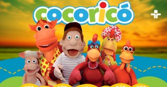
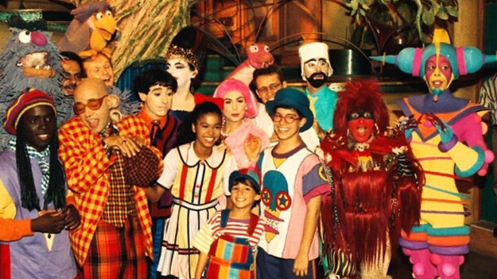
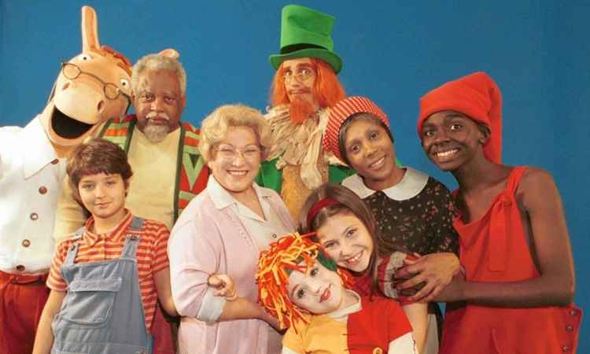
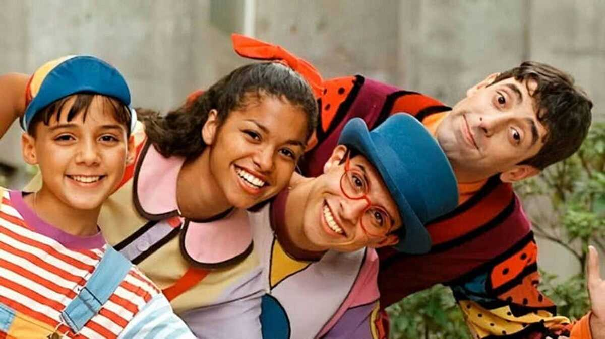
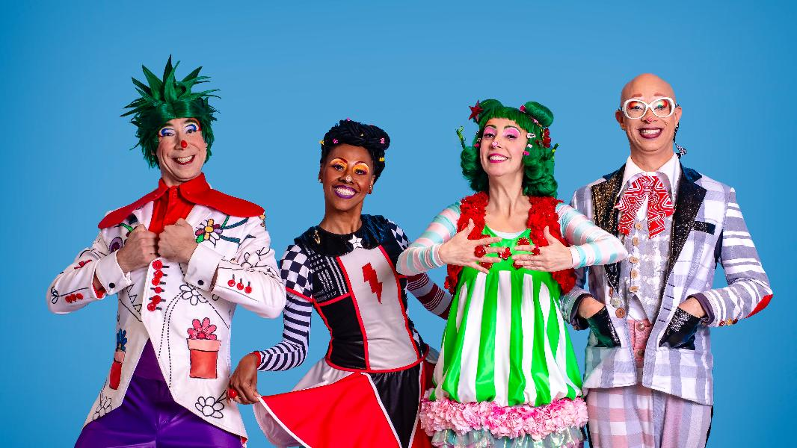
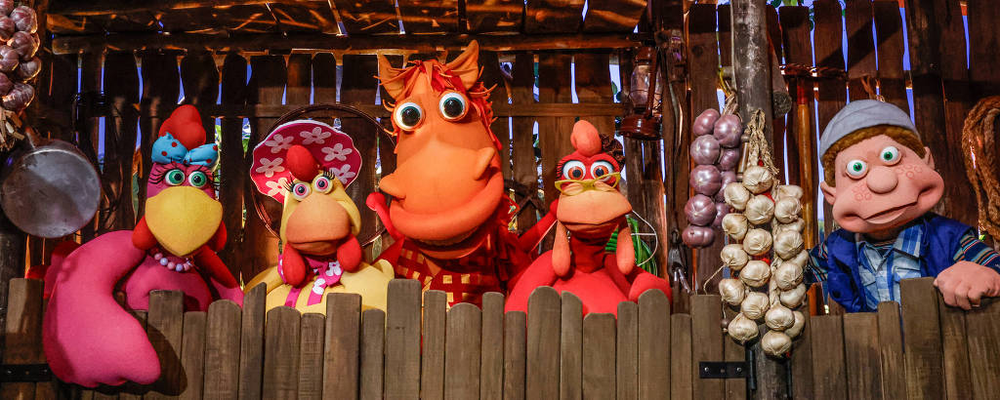
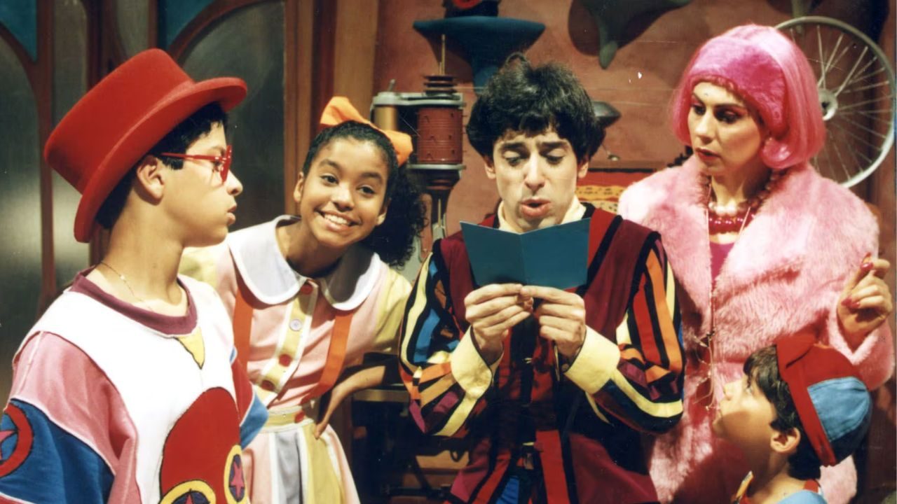
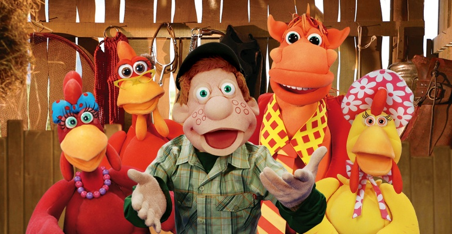
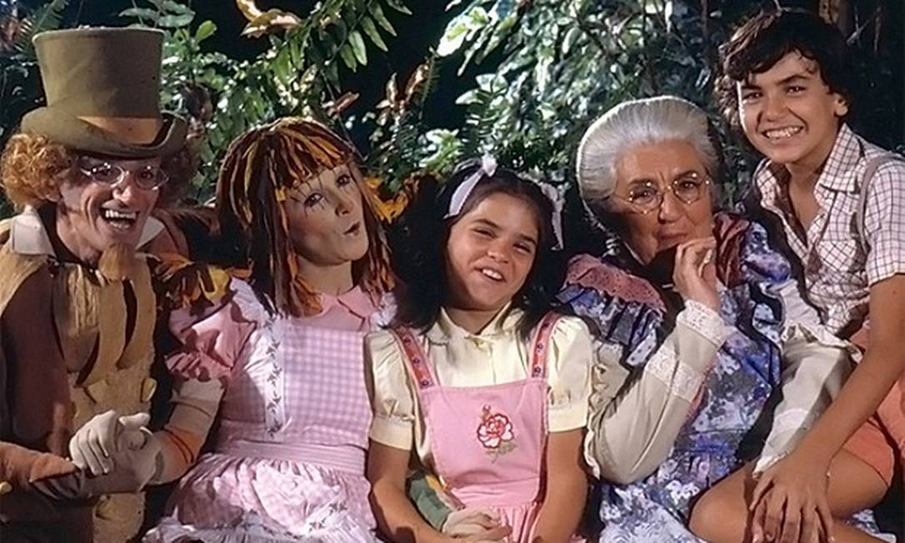

Galeria Nostálgica
Aqui é um portal no tempo e uma curadoria afetiva dos programas que ficaram na memória!









Aqui é um portal no tempo e uma curadoria afetiva dos programas que ficaram na memória!








